승강기기사 (2004-03-07 기출문제)
1과목: 승강기 개론
1. 과부하감지장치(Overload Switch)가 동작되는 부하(하중)의 세팅범위는 몇 % 범위인가?
- 90∼100
- 100∼1⑤
- 1⑤∼110
- 110∼125
(정답률: 59%)

2. 1200형 에스컬레이터의 수송능력을 옳게 설명한 것은?
- 시간당 1200명을 수송하는 것이다.
- 시간당 6000명을 수송하는 것이다.
- 시간당 9000명을 수송하는 것이다.
- 시간당 12000명을 수송하는 것이다.
(정답률: 71%)
3. 엘리베이터의 조속기 로프는 어디에 고정시켜야 하는가?
- 주로프(Main Rope)
- 카의 상단 빔(Car Top Beam)
- 안전장치 암(Safety Device Arm)
- 카 프레임(Car Frame)
(정답률: 68%)
4. 유압회로의 하나인 미터인(meter-in) 회로에 대한 특징을 옳게 설명한 것은?
- 정확한 속도제어가 가능하고 효율이 좋다.
- 정확한 속도제어가 가능하나 효율이 비교적 나쁘다.
- 정확한 속도제어는 곤란하나 효율이 좋다.
- 정확한 속도제어도 곤란하고 효율도 나쁘다.
(정답률: 62%)
5. 권상형 로프의 구조에 대한 설명이다. 틀린 것은?
- 보통꼬기는 소선과 외부와의 접촉면이 짧고, 마모에 대한 영향이 있다.
- 로프의 중심부를 구성하는 것을 심강이라한다.
- 로프를 꼬는 방법에는 보통꼬기와 랭그식꼬기가 있다.
- 엘리베이터 권상형 주로프는 주로 5∼7호가 사용 된다.
(정답률: 60%)
6. 다음 설명 중 옳은 것은?
- 제어반 등을 절연 측정할 때 회로시험기로 전 회로의 절연을 측정할 수 있다.
- 비상용승강기가 비상운전할 때 카의 과적은 위험하므로 카가 움직이지 않아야 한다.
- 비상용승강기는 정상운전시 카의 과적에도 원활하게 움직여야 한다.
- 2차 소방스위치 전환 작동시는 카의 문이 열린상태에서도 카를 승강시킬 수 있어야 한다.
(정답률: 60%)
7. 건물측과 엘리베이터 또는 에스컬레이터의 신호관계를 잘못 설명한 것은?
- 에스컬레이터 승장에 근접된 방화셔터가 닫히기 시작하면 에스컬레이터는 동작을 멈춘다.
- 파킹스위치는 기준 층 승장 혹은 감시반에 설치하여 조작할 수 있다.
- 비상시 비상용 엘리베이터의 표시등은 비상운전으로한다.
- 비상용 엘리베이터의 경우는 비상시 통화장치를 설치해야 하고, 일반 인승용은 설치하지 않아도 된다.
(정답률: 56%)
8. 로프와 도르래사이의 미끄러짐에 대한 설명으로 옳은 것은?
- 로프의 감기는 각도가 클수록 미끄러지기 쉽다.
- 카의 가속도와 감속도가 작을수록 미끄러지기 쉽다.
- 카와 균형추측의 로프에 걸리는 중량비가 작을수록 미끄러지기 쉽다.
- 로프와 도르래의 마찰계수가 낮을수록 미끄러지기 쉽다.
(정답률: 68%)
9. 엘리베이터의 제어방식에 따른 적용 속도의 설명으로 옳은 것은?
- 직류의 정지레오나드의 무기어방식은 주로 90m/min 이상에 적용한다.
- 교류 1차전압제어방식은 120m/min까지만 적용 가능하다.
- 가변전압가변주파수방식은 모든 속도범위에 적용이 가능하다.
- 현재 세계에서 가장 빠른 엘리베이터의 제어방식은 직류 정지레오나드방식이다
(정답률: 63%)
10. 엘리베이터의 정격속도가 매 분당 180m이고, 제동소요 시간이 0.3초인 경우의 제동거리는 몇 m 인가?
- 0.25
- 0.45
- 0.65
- 0.85
(정답률: 56%)
11. 엘리베이터용 주로프에 가장 일반적으로 사용되는 와이어로프는?
- 8×W(19), E종, 보통 Z꼬임
- 8×W(19), E종, 보통 S꼬임
- 8×S(19), E종, 보통 S꼬임
- 8×S(19), E종, 보통 Z꼬임
(정답률: 65%)
12. 평균 입.출고 시간이 가장 빠른 입체주차설비는?
- 수직순환식
- 평면왕복식
- 다단방식
- 승강기식
(정답률: 50%)
13. 덤 웨이터 승강로의 구조에서 출입구 바닥 앞부분과 카바닥 앞부분과의 틈의 너비는 몇 cm 이하로 하여야 하는가?
- 1
- 2
- 3
- 4
(정답률: 45%)
14. 로프식 승강기의 호출버튼, 조작반, 통화장치 등 승강기의 안과 밖에 설치되는 모든 스위치의 높이는 바닥면으로 부터 0.8m이상 1.2m이하에 설치하여야 하나, 스위치가 많아 설치하기가 곤란한 경우에는 몇 m 이하까지로 할 수 있는가?
- 1.3
- 1.4
- 1.5
- 1.6
(정답률: 72%)
15. 유압엘리베이터에서 가장 많이 사용되는 펌프는?
- 원심식
- 피스톤식
- 가변토출량식
- 강제 송유식
(정답률: 64%)
16. 카의 정격속도가 90m/min인 유입식 완충기의 필요 최소행정은 약 몇 m 인가?
- 115
- 152
- 185
- 212
(정답률: 49%)
17. 기계실의 구조에 대한 설명으로 적합하지 않은 것은?
- 다른 부분과 내화구조로 구획한다.
- 다른 부분과 방화구조로 구획한다.
- 내장의 마감은 방청도료를 칠하여야 한다.
- 벽면이 외기에 직접 접하는 경우에는 불연재료로 구획할 수 있다.
(정답률: 52%)
18. 도어는 오프닝의 위와 양쪽 옆, 그리고 상호간에 겹쳐야하는데, 다중 속도 도어의 경우 겹쳐야 하는 치수는 몇mm 이상이어야 하는가?
- 3
- 5
- 10
- 15
(정답률: 40%)
19. 브레이스 로드는 카 바닥에 균등하게 분산될 하중의 얼마정도를 카 틀에 전달하는가?
- 3/8
- 5/8
- 7/8
- 9/8
(정답률: 70%)
20. 이동케이블과 로프의 이동에 따라 변화되는 하중을 보상하기 위하여 설치하는 것은?
- 균형추
- 균형체인
- 제어 케이블
- 균형 클로져
(정답률: 72%)
2과목: 승강기 설계
21. 엘리베이터용 가이드 레일의 적용시 고려되지 않는 것은?
- 비상정지장치의 작동시 걸리는 하중
- 불균형한 하중의 적재시 발생되는 회전 모멘트
- 지진 발생시 건물의 수평 진동
- 엘리베이터의 정격속도
(정답률: 63%)
22. 도어개폐장치에 대한 설명 중 틀린 것은?
- 카 및 승장도어가 완전히 닫힌 상태에서 카가 출발할 수 있도록 설계되어야 한다.
- 도어와 문틀(Jamb or Entrance Jamb)이 겹치는 부분은 12mm이상이어야 한다.
- 승강장 도어의 시건장치는 일반 공구로는 열 수 없는 구조이어야 한다.
- 카가 주행하는 중에도 카도어가 쉽게 열릴 수 있는 구조이어야 한다.
(정답률: 66%)
23. 시간당 9000명을 수송할 수 있는 에스컬레이터를 설치하고자 한다. 난간폭이 몇 mm 인 것을 설치하여야 하는가?
- 600
- 800
- 1000
- 1200
(정답률: 73%)
24. 1대의 승강기 조작방식에서 자동운전방식이 아닌 것은?
- 하향승합자동방식(Down Collective)
- 단식자동식(Single Automatic)
- 승합전자동식(Selective Collective)
- 수송계획 자동선택 운전방식
(정답률: 52%)
25. 지진대책에 따른 엘리베이터의 구조에 관한 설명이다. 틀린 것은?
- 지진이나 기타 진동에 의해 주로프가 도르래에서 이탈하지 않아야 한다.
- 엘리베이터의 균형추가 지진이나 기타 진동에 의하여 가이드 레일로부터 이탈하지 않아야 한다.
- 승강로내에는 지진시에 로프, 전선 등의 기능에 악영향이 발생하지 않도록 모든 돌출물을 설치하여서는 아니된다.
- 엘리베이터의 전동기, 제어반 및 권상기는 카마다 설치하고, 또한 지진이나 기타 진동에 의해 전도 또는 이동하지 않아야 한다.
(정답률: 67%)
26. 엘리베이터에서 카 틀의 구성요소가 아닌 것은?
- 상부체대
- 하부체대
- 스프링 버퍼
- 브레이스 로드
(정답률: 78%)
27. 적재하중 1000kg, 카의 전체 중량 1200kg인 엘리베이터에 지름 12mm의 로프 5본을 사용했을 때 로프의 안전율은 얼마인가? (단, 지름 12mm 로프의 파단력은 5990kg이고, 로프 자중은 무시하며, 1:1로핑을 적용한다.)
- 10.6
- 11.6
- 12.6
- 13.6
(정답률: 46%)
28. 그림은 승강기용 주로프의 단면을 표시한 것이다. 이 주로프의 구성기호는?
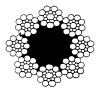
- 8×S(19)
- 8×Ｗ(19)
- 8×S(25)
- 8×Ｗ(25)
(정답률: 50%)
29. 엘리베이터의 전원이 3상3선식인 경우 전압강하를 계산하는데 필요하지 않은 것은?
- 선로 1m당 저항
- 전선의 최대허용전류
- 최대부하전류
- 선로의 길이
(정답률: 35%)
30. 초고층 빌딩에서 서비스 층의 분할 방법에 관한 설명 중 틀린 것은?
- 한 구역의 층수는 그 그룹의 엘리베이터에서 처리 가능한 교통량으로 하여야 한다.
- 메인 로비와 스카이 로비 등 공공 장소에는 모든 층에서 엘리베이터가 직행 가능하도록 계획한다.
- 임대사무실 빌딩에서는 한 입주사는 둘 이상의 서비스 구역으로 분산하는 것이 좋다.
- 서비스 층을 분할하면 저·중층용 엘리베이터 기계실 상부를 사무실 등으로 사용이 가능하다.
(정답률: 48%)
31. 도어에 관련된 부품 및 장치에 대한 설명으로 옳지 않은 것은?
- 도어 클로져: 도어 머신의 구동장치이다.
- 도어 인터록: 승장도어의 열림을 방지한다.
- 도어 행거: 승장도어가 도어 레일에서 이탈하는 것을 방지하고 도어 무게를 지탱한다.
- 도어 슈: 실(Sill)에서 도어가 이탈하는 것을 방지한다.
(정답률: 60%)
32. V벨트 전동의 특징으로 맞는 것은?
- 미끄럼이 적고, 전동 회전비가 크다.
- 큰 동력이 전달된다.Ω
- 속도비가 정확하다.
- 수리 및 유지가 쉽다.
(정답률: 52%)
33. 피트의 구조로 적합하지 않은 것은?
- 피트는 방수구조를 갖추어야 한다.
- 승강기의 최대 충격에 견디는 강도를 유지하여야 한다.
- 피트 내부에는 승강기에 관련된 장치만 있어야 한다.
- 피트 바닥에의 출입을 용이하게 하기 위하여 별도의 비상구를 설치할 수 있다.
(정답률: 63%)
34. 가이드 레일에 대한 설명으로 옳은 것은?
- 가이드 레일의 중량은 전체 무게의 단위로 표시한다.
- 가이드 레일의 총 길이는 5010mm 이다.
- 3k, 5k 레일은 카측에도 사용할 수 있다.
- 가이드 레일의 끝단은 85도 각도로 절단한다.
(정답률: 41%)
35. 주파수 60Hz, 슬립 3%, 회전속도가 873rpm인 유도전동기의 극수는 몇 극인가?
- 2
- 4
- 6
- 8
(정답률: 41%)
36. 제어반의 절연저항에 대한 설명으로 옳지 않은 것은?
- 300V이하 전동기 주회로의 절연저항은 0.2MΩ이상이어야 한다.
- 400V를 초과하는 전동기 주회로의 절연저항은 0.3MΩ이상이어야 한다.
- 150V이하 제어회로의 절연저항은 0.1MΩ이상이어야 한다.
- 150V초과 300V이하의 조명회로의 절연저항은 0.2MΩ이상이어야 한다.
(정답률: 45%)
37. 권상기 및 기타 기계대에 부착된 모든 장치의 하중이 1200㎏, 로프 중량이 100㎏, 로프에 작용하는 하중이 4000㎏ 일 때, 기계대에 걸리는 하중은 몇 kg 인가?
- 8800
- 9000
- 9200
- 9400
(정답률: 55%)
38. 엘리베이터에 사용되는 동력의 전원설비에 포함되지 않는 것은?
- 변압기
- 과전류차단기
- 배전선
- 제어반
(정답률: 48%)
39. 그림과 같은 도르래 장치의 표시가 옳게된 것은?
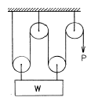
- 2:1로핑,
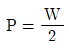
- 4:1로핑,
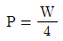
- 2:1로핑,
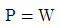
- 4:1로핑,
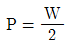
(정답률: 59%)
40. 승강로 상.하의 단말정차장치(Terminal Stopping Device)에 대한 설명 중 틀린 것은?
- 권상기를 위한 정차장치는 카, 승강로 또는 기계실에 위치하여 카의 이동에 의하여 조작되어야 한다.
- 기계실에 설치되는 것은 기계적으로 연결되어 카의 이동에 의하여 동작하거나 마찰 또는 견인에 의하여 구동되는 방식을 이용한다.
- 정차장치가 카에 기계적으로 연결되고, 구동수단으로 사용되는 테이프, 체인, 로프 및 이와 유사한 장치의 구동수단에 이상이 발생할 경우 구동모터를 차단하고 제동기를 작동시킬 수 있는 장비를 구비하여야 한다.
- 이 장치는 최종단말정차장치가 작동할 때까지 그 기능이 유지되도록 설계 및 설치되어야 한다.
(정답률: 48%)
3과목: 일반기계공학
41. 350rpm 으로 70 PS 를 전달하는 축의 전달 토크는 약 몇 ㎏f-㎝ 인가?
- 1432.4
- 1948
- 14324
- 19480
(정답률: 25%)
42. 제련 방법에 따른 동의 종류 가운데 순도가 가장 높은 것은?
- 전기동
- 정련동
- 탈산동
- 무산소동
(정답률: 76%)
43. 250㎏f의 인장하중을 받은 연강봉 직경은 최소 몇 ㎜가 적합한가? (단, 재료의 극한강도는 36kgf/mm2, 안전율은 3 이다.)
- 5.2
- 6.1
- 6.7
- 7.7
(정답률: 35%)
44. 그림과 같은 삼각형 단면의 밑변인 B - C 축에 대한 단면2차 모멘트는?
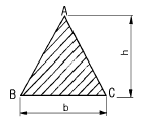
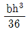
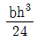
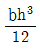
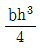
(정답률: 60%)
45. 축에 있어서 직경을 d, 축 재료의 전단응력을 τ라 하면, 비틀림 모멘트 T 의 관계식으로 올바른 것은?
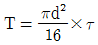
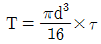
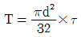
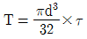
(정답률: 62%)
46. 96㎏f-m 의 토크를 전달하는 지름 50 ㎜ 인 축에 사용할 묻힘 키의 폭과 높이가 12 ㎜ x 8 ㎜ 일 때 다음 중 키의 길이로 가장 적합한 것은? (단, 키의 전단응력 만으로 계산하고 키의 허용 전단응력은 800㎏f/cm2 이다.)
- 30㎜
- 40㎜
- 60㎜
- 80㎜
(정답률: 55%)
47. 직경 500 ㎜인 파이프 속을 평균속도가 1.8 m/sec로 흐를 때 관의 길이가 60 m이면 손실수두는 약 몇 m 인가? (단, 관 마찰계수는 f= 0.02 이다.)
- 0.785
- 0.397
- 0.223
- 0.120
(정답률: 49%)
48. 가스용접 및 가스절단에 관한 일반적인 설명으로 틀린 것은?
- 용해 아세틸렌 용기 저장온도는 40℃ 이하로 유지한다.
- 저압식 토치는 가변압식과 불변압식이 있다.
- 강재를 가스로 절단하는 경우 순도가 높은 아세틸렌만을 고압으로 분출한다.
- 가스절단에 사용되는 산소의 순도는 산소 소비량과 밀접한 관계가 있다.
(정답률: 49%)
49. 게이지 블록의 정도를 나타내는 등급으로 정도가 가장 높아 참조용으로 사용되며, 표준용 게이지 블록의 정도 검사에 사용되는 한국산업규격(KS) 등급인 것은?
- 특급
- C급
- 1급
- 00급
(정답률: 59%)
50. 두께 12㎜ 강판을 리벳이음으로 안지름 1000㎜인 보일러 동체를 만들었다. 강판의 허용인장응력을 6㎏f/mm2, 리벳이음의 효율을 70%라 할 때 몇 ㎏f/cm2의 내압까지 사용할 수 있는가?
- 1
- 2
- 10
- 20
(정답률: 31%)
51. 다음 펌프 중에서 주기적으로 양수하므로 맥동이 생기는 대표적인 것은?
- 원심 펌프
- 축류 펌프
- 왕복 펌프
- 기어 펌프
(정답률: 59%)
52. 다음의 용접법 중 불활성 가스를 사용하는 용접은?
- 티그 용접
- 초음파 용접
- 점 용접
- 테르밋 용접
(정답률: 55%)
53. 자동차 정비 측정용 기기중 1/100mm까지 측정할수 있는 마이크로미터에서 나사의 피와 딤블의 눈금에 대하여 바르게 설명한 것은?
- 피치는 0.5mm 이고, 딤블은 50등분이 되어 있다.
- 피치는 1mm 이고, 딤블은 50등분이 되어 있다.
- 피치는 0.25mm 이고, 딤블은 50등분이 되어 있다.
- 피치는 0.5mm 이고, 딤블은 100등분이 되어 있다.
(정답률: 64%)
54. 그림과 같은 블록 브레이크에서 드럼 축의 레버를 누르는 힘 F를 우회전할 때는 F1, 좌회전 할 때의 F를 F2라고 하면 F1/F2의 값은 얼마인가?
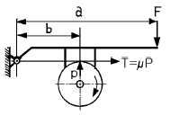
- 1
- 1.5
- 2
- 2.5
(정답률: 46%)
55. 일반적인 탄소강 재료를 사용하는 경우의 사용응력, 허용응력, 탄성한도의 관계로 다음 중 가장 적합한 것은?
- 허용응력 ≧ 사용응력 > 탄성한도
- 허용응력 > 탄성한도 > 사용응력
- 탄성한도 > 사용응력 > 허용응력
- 탄성한도 > 허용응력 ≧ 사용응력
(정답률: 64%)
56. 다음 중 비파괴(非破壞)시험에 해당하지 않는 것은?
- 초음파 탐상 시험법
- 형광 침투 탐상법
- 샤르피 충격 시험법
- 자기 결함 탐상법
(정답률: 68%)
57. 알루미늄 및 알루미늄 합금의 특징 설명으로 틀린 것은?
- 두랄루민은 비강도가 연강의 약 3배정도이다.
- 비중이 2.7로 작고, 용융점이 600℃ 정도이다.
- 열전도성, 전기 전도성이 좋다.
- 표면에 산화막이 형성되지 않아 부식이 쉽게 된다.
(정답률: 78%)
58. 다음 펌프 중 용적형 펌프는?
- 원심펌프
- 축류펌프
- 왕복펌프
- 제트펌프
(정답률: 54%)
59. 1000rpm으로 2000 kgf-cm의 비틀림 모멘트를 전달하는 축의 전달 동력은 몇 kW 인가?
- 2.⑤3
- 20.53
- 2⑤.3
- 2⑤3
(정답률: 36%)
60. 강의 펄라이트의 조직을 설명한 것으로 가장 알맞는 것은?
- 침상조직을 형성하며 경도가 가장 높다.
- γ철과 탄화철이 혼합된 조직이다.
- 탄소를 함유하지 않은 철로 백색이며, 강조직에 비하여 강도와 경도가 적다.
- 페라이트와 탄화철이 서로 층상으로 배치된 조직이며 현미경 조직은 흑백색이고 강하고 질긴 성질이 있다.
(정답률: 44%)
4과목: 전기제어공학
61. AC 서보 전동기에 대한 설명 중 옳은 것은?
- AC 서보 전동기는 큰 회전력이 요구되는 시스템에 사용된다.
- AC 서보 전동기는 두 고정자 권선에 90도 위상차의 2상 전압을 인가해 회전자계를 만든다.
- AC 서보 전동기의 전달함수는 미분요소이다.
- 고정자의 기준 권선에 제어용 전압을 인가한다.
(정답률: 53%)
62. 10㎌의 콘덴서에 200V의 전압을 인가하였을 때 콘덴서에 축적되는 전하량은 몇 C 인가?
- 2×10-3
- 2×10-4
- 2×10-5
- 2×10-6
(정답률: 42%)
63. 제동계수 중 최대 초과량이 가장 큰 것은?
- δ= 0.5
- δ= 1
- δ= 2
- δ= 3
(정답률: 72%)
64. 두 개의 안정된 상태를 갖는 쌍안정 멀티바이브레이터를 이용한 것으로 셋(Set) 입력으로 출력이 생기고 리셋(Reset) 입력으로 출력이 없어지는 회로는?
- 기동우선회로
- 정지우선회로
- 플립플롭회로
- 리플카운터회로
(정답률: 46%)
65. 제어요소의 동작 특성 중 연속동작이 아닌 것은?
- 비례제어
- 비례적분제어
- 비례미분제어
- 온오프제어
(정답률: 70%)
66. 전열기에서와 같이 온도가 높고 낮음이나, 열량이 많고 적음에 관계없이 전류를 통하게 하거나 끊거나 하는 제어 명령만을 자동적으로 행하는 제어를 어떤 제어라 하는가?
- 정량적제어
- 정성적제어
- 시퀀스제어
- 피드백제어
(정답률: 48%)
67. R-L-C 병렬회로에서 회로가 병렬공진되었을 때 합성 전류는 어떻게 되는가?
- 최소가 된다.
- 최대가 된다.
- 전류는 흐르지 않는다.
- 전류는 무한대가 된다.
(정답률: 48%)
68. 제너다이오드회로에서 v1=20sinωt[V], v2=5V, RL≪Rs일 때 v2 의 파형은?
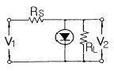
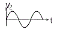
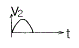
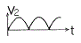
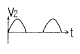
(정답률: 60%)
69. 그림과 같은 논리회로는?
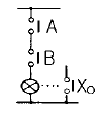
- OR 회로
- AND 회로
- NOT 회로
- NOR 회로
(정답률: 59%)
70. 피드백제어계에 반드시 필요한 장치는?
- 변환장치
- 출력값을 보정하는 장치
- 안정도를 향상시키는 장치
- 입력과 출력의 비교장치
(정답률: 64%)
71. 어떤 코일에 흐르는 전류가 0.01초사이에 일정하게 50A에서 10A로 변할 때 20V의 기전력이 발생하면 자기인덕턴스는 몇 mH 인가?
- 5
- 10
- 20
- 40
(정답률: 40%)
72. 제어시스템의 감도 설명이 아닌 것은?
- 프로세스 전달함수의 매개변수가 설정값에서 벗어난양의 크기
- 시스템을 구성하는 전달함수의 특성 변화에 미치는 영향 정도
- 시스템 전달함수의 상대변화와 프로세스 전달함수의 상대변화의 비
- 궤환제어시스템에서 루프전달함수의 크기를 증가시키면 출력에 대한 전달함수의 영향은 증가
(정답률: 57%)
73. 4극 60Hz의 3상 유도전동기가 있다. 1725rpm으로 회전하고 있을 때 2차 기전력의 주파수는 몇 Hz 인가?
- 2.5
- 7.5
- 52.5
- 57.5
(정답률: 26%)
74. 비행기 등과 같은 움직이는 목표값의 위치를 알아보기 위한 즉, 원뿔주사를 이용한 서보용 제어기는?
- 자동조타장치
- 추적레이더
- 공작기계의 제어
- 자동평형기록계
(정답률: 75%)
75. 직류발전기를 역회전 시키면?
- 단락이 일어난다.
- 정회전 때와 같다.
- 발전하지 않는다.
- 과대 전압이 유기된다.
(정답률: 68%)
76. 처음에 충전되지 않은 커패시터에 그림과 같은 전류파형이 가해질 때 커패시터 양단의 전압파형은?
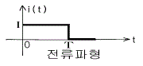
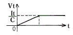
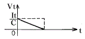
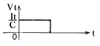
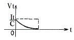
(정답률: 71%)
77. 그림의 선도에서 전달함수 C(s)/R(s)는?
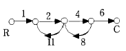
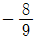
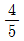
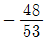
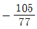
(정답률: 79%)
78. 유도전동기의 속도제어 방법이 아닌 것은?
- 극수변환법
- 2차여자제어법
- 전압제어법
- 역률제어법
(정답률: 34%)
79. 더미스터는 온도가 증가할 때 그 저항은 어떻게 되는가?
- 증가한다.
- 감소한다.
- 임의로 변화한다.
- 변화가 전혀 없다.
(정답률: 53%)
80. 그림과 같이 직류 전력을 측정하였다. 가장 정확하게 측정한 전력은? (단, Ri:전류계의 내부저항, Re:전압계의 내부저항이다.)
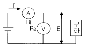
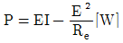
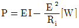
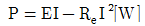
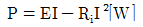
(정답률: 49%)
따라서, 보기에서 정답이 "1⑤∼110" 인 이유는 이 범위 내에서는 더 큰 전류가 발생해도 과부하감지장치가 동작되지 않기 때문입니다. 다른 보기들은 이 범위보다 낮거나 높기 때문에, 해당 범위 내에서는 동작되지 않을 수 있습니다.